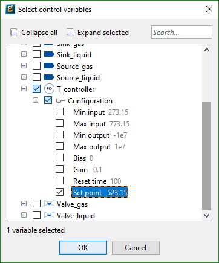
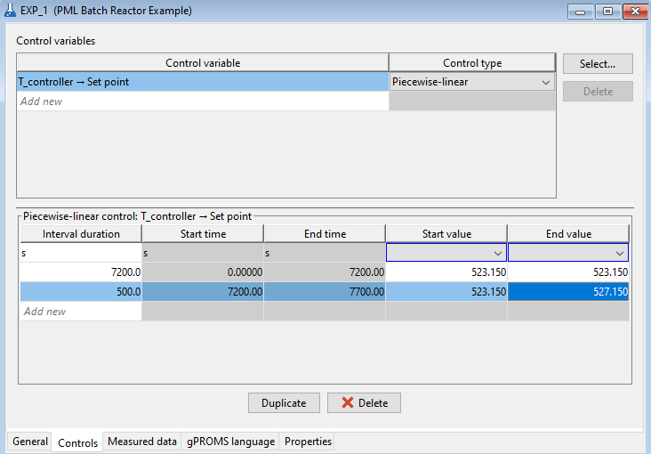

An experiment control is a variable that is adjusted during an experiment (such as a heating policy in a reactor). Experiment controls therefore form part of the "recipe" for running the experiment. The user can specify the variation in a Variable value using one of three different mechanisms:
Time-invariant controls: provide a single variable value, this quantity will be the same for the duration of the experiment. Appropriate for steady-state and dynamic experiments.
Piecewise constant controls: provide multiple variable values, the quantity holds a different constant value for specified time intervals during the experiment. Appropriate for dynamic experiments only.
Piecewise linear controls: provide multiple variable values, the quantity varies linearly (from a start value to an end value) in a specified time interval during the experiment. Appropriate for dynamic experiments only.
Note that any Variables that are Assigned values in a Process but are not specified as controls in the experiment will retain their Assigned values, whether these are constants or functions of TIME.
The Control interval durations are synchronised for all piecewise constant and piecewise linear controls and adding or deleting control intervals therefore affects all piecewise control variables.
In order to define the controls, click on the Controls tab in the Experiments Performed entity editor and do the following:
Use the Select... button to populate the table using a dialog-based choice which will only display variables that the model developer has chosen to be suitable as control variables. See the section on dialog-based variable choice in Model Validation.

Alternatively, click the <new> cell in the Control variables table at the top of the window and type the full pathname of the gPROMS Control variable. This variable should be one of those you ASSIGNed in the associated Process entity. If you do not wish to type the pathname you can select the appropriate variable from a drop down list by holding the CTRL key down and hitting the SPACE button on your keyboard. The first time you do this, gPROMS will give you a list of relevant Units and Variables. Select the desired one and then repeat as necessary to drill down to the desired Variable.
The full pathname may be converted to a descriptive name in case the model interface has been configured accordingly. Depending on the chosen application preferences, it may not be possible to edit the table directly.
Choose from the drop down list in the right-hand column to specify whether the control variable is time-invariant, piecewise constant or piecewise linear.
Repeat the above for each new control variable you wish to use.
Having chosen the format for the time-varying behaviour of the control variable, select the relevant control by clicking on it in the top pane, and go to the lower part of the window to enter the details of its behaviour during the experiment. Time-invariant controls simply need a value. Piece-wise constant controls need a duration for each interval1When you enter the interval duration gPROMS automatically determines the start and end times of that interval, but the relevant cells are greyed out and you cannot edit them., together with the corresponding value of the control. Piecewise linear controls need the interval duration, together with starting and final values for the control variable during each interval (as illustrated in the following figure).
In the figure below, it should be noted that the displayed time units are those specified in the General tab, whereas the set point has none: it is declared as a dimensionless quantity.
To duplicate or delete an entire interval, select it and click on the Duplicate or Delete buttons at the bottom of the window.

Specifying a piecewise linear profile for the behaviour of a control variable during the experiment.